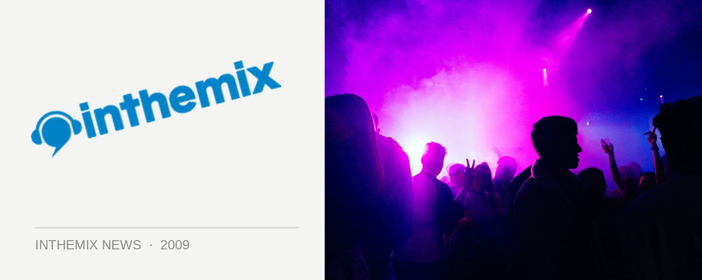

Mark Knight & Toolroom are coming to a festival near you
Mark Knight and his Toolroom Records stable have surely and steadily been taking over the world’s nightclubs with their unique brand of edgy big-room house, and it’s looking like they’ll soon be taking over Australia’s festivals too. The man himself told ITM this week they’re planning on firing up Toolroom branded arenas at some of our biggest festivals, with a visit on the cards for either the New Year period or Future Music Festival next year!
“We’re doing all the key festivals in Europe, like Global Gathering in the UK and Dance Valley in Holland where we have our own arenas,” Mark told ITM. “So hopefully we can be part of the touring festival brigade in Oz, because our sound very much lends towards that sort of thing. Teaming up with the right partner will definitely get us a foot in the door.”
He says he’s looking to our festivals as the most fitting place to get the Toolroom Records sound out to a wider audience in Australia, and it’ll be part of a wider game plan that has seen the label partner with the Onelove stable for local distribution of their music. “I think the festivals are where it would figure best for us, for our sound and the DJs involved … I don’t think we necessarily sit well in the mainstream clubs, our sound works better in the festivals where people are a little bit more open minded. In clubs they tend to look for a specific thing, and I don’t think we quite fit that bill if I’m totally honest.”
Mark says that he’s looking to return with the Toolroom crew either for Summadayze on New Years Day, or otherwise the Future Music Festival tour in March. “We’re just weighing up our different options at the moment. We’ve just got some offers in Asia for New Years Eve, and if that works then it makes sense to fly straight over for New Years Day. If not, then we’ll come in March. I really enjoyed doing the festival last year, it was really, really great fun so I can’t wait to get abck and do some more of that.”
Toolroom Knights, mixed by Mark Knight 2.0 is out now in Australia through Onelove. Stay tuned for the full ITM interview shortly!